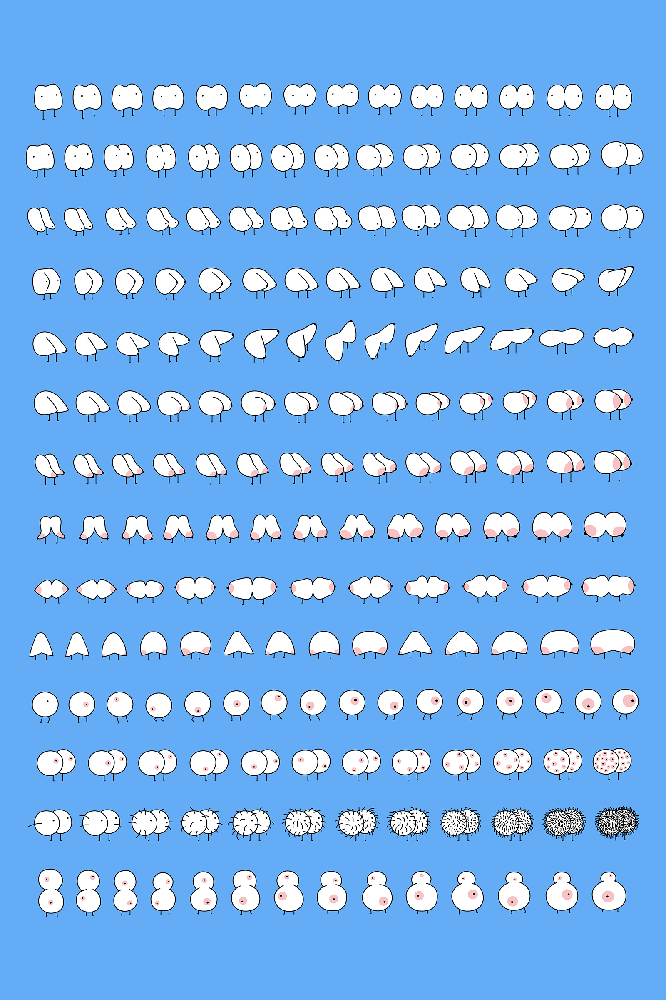

This is a fantasy land of boobies.
Here boobies become autonomous creatures and live by their own rules. Flat boobies, round boobies, triangle boobies, bouncing boobies, hairy boobies, cell boobies, mutated boobies, boobie train, finger boobies, and huge boobie monsters. This is boobie wikipedia.


BOOBIES IN MASTERPIECES
The Girl with the Pearl Earring , Johannes Vermeer, 1665The Son of Man, Rene Margritte, 1964The Persistence of Memory, Salvador Dali, 1931The Starry Night, Vincent von Gogh, 1889Eve Giving Adam the Forbidden Fruit, Lucas Cranach the Elder, 1532American Gothic, Grant Wood, 1930The Birth of Venus, Sandro Botticelli, 1486